Robin:

So I hope you’ve managed to calculate the median number of download for these journals and get the impact factor!
If you visualized the data, you might have seen something like the plot below. There is a really strong relationship between number of downloads of a preprint and the impact factor of the journal. Now, this may be a bit of a chicken-and-egg story. I’m not sure whether articles eventually published in a high-impact journal will get more downloads on their preprint, or whether preprints who have been very popular before being published are more likely to be published in a high-impact journal? Now, you may have a think about this with your group for a few minutes before you move on.

Anyway, below are a few answers you could have gotten, click the right one to continue to the next step!